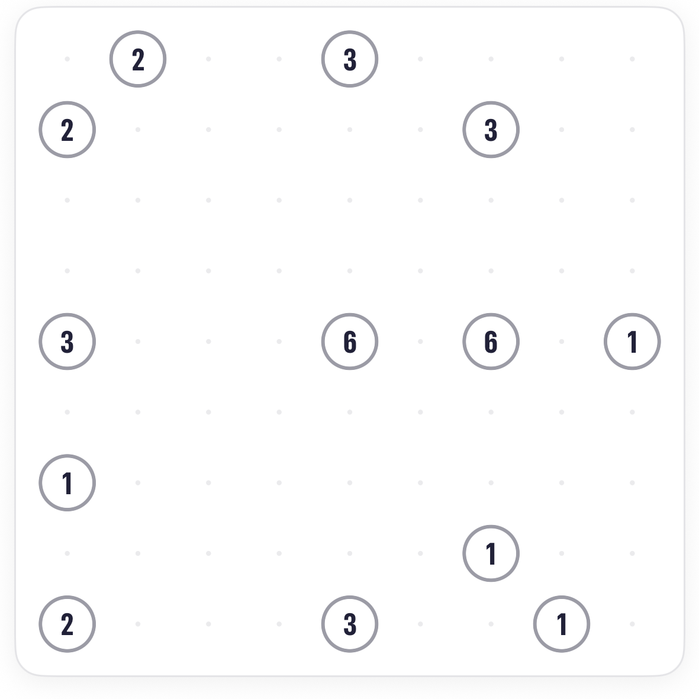
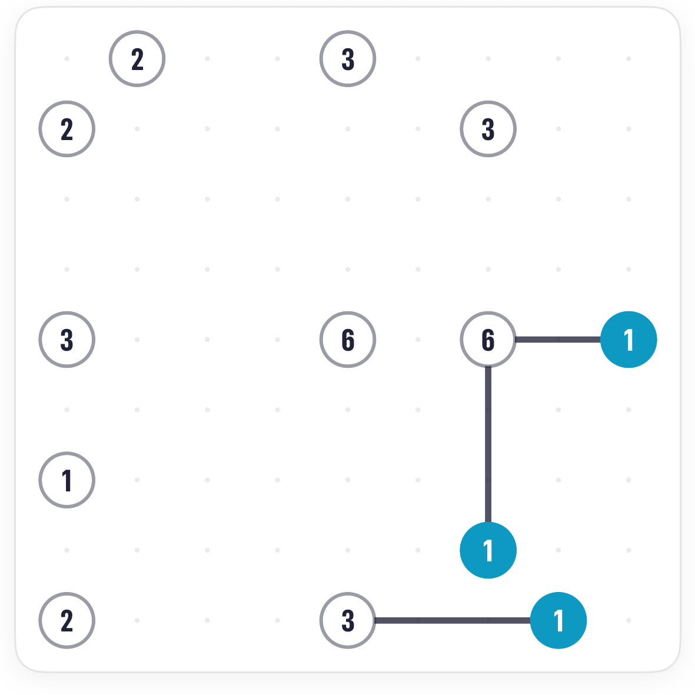
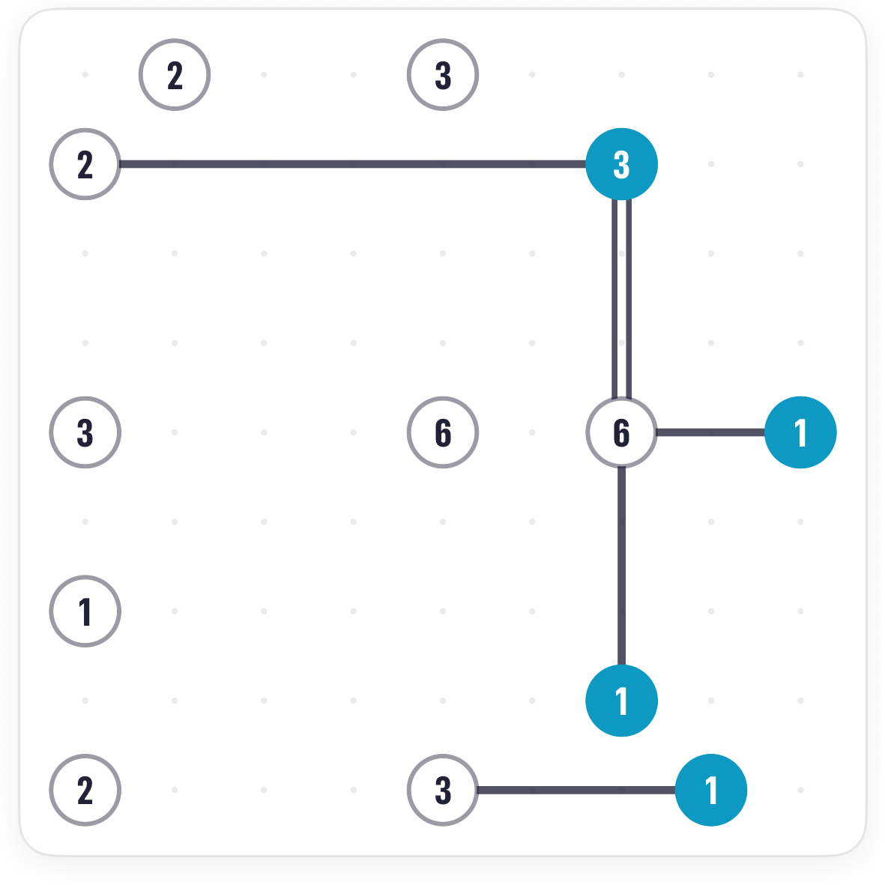
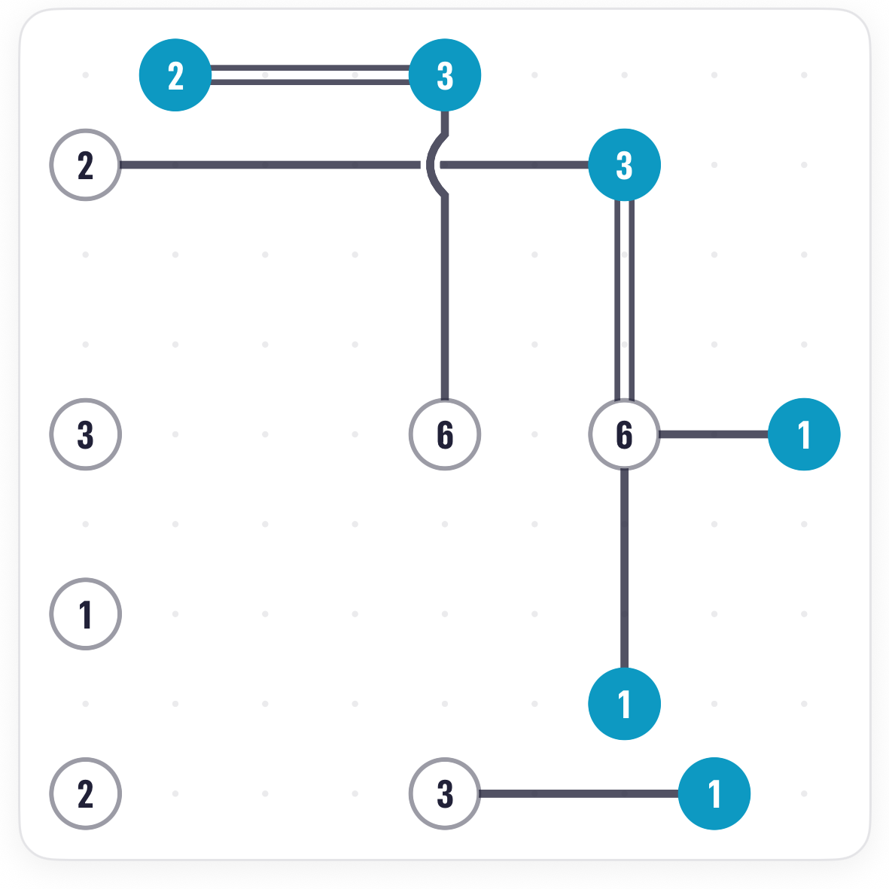
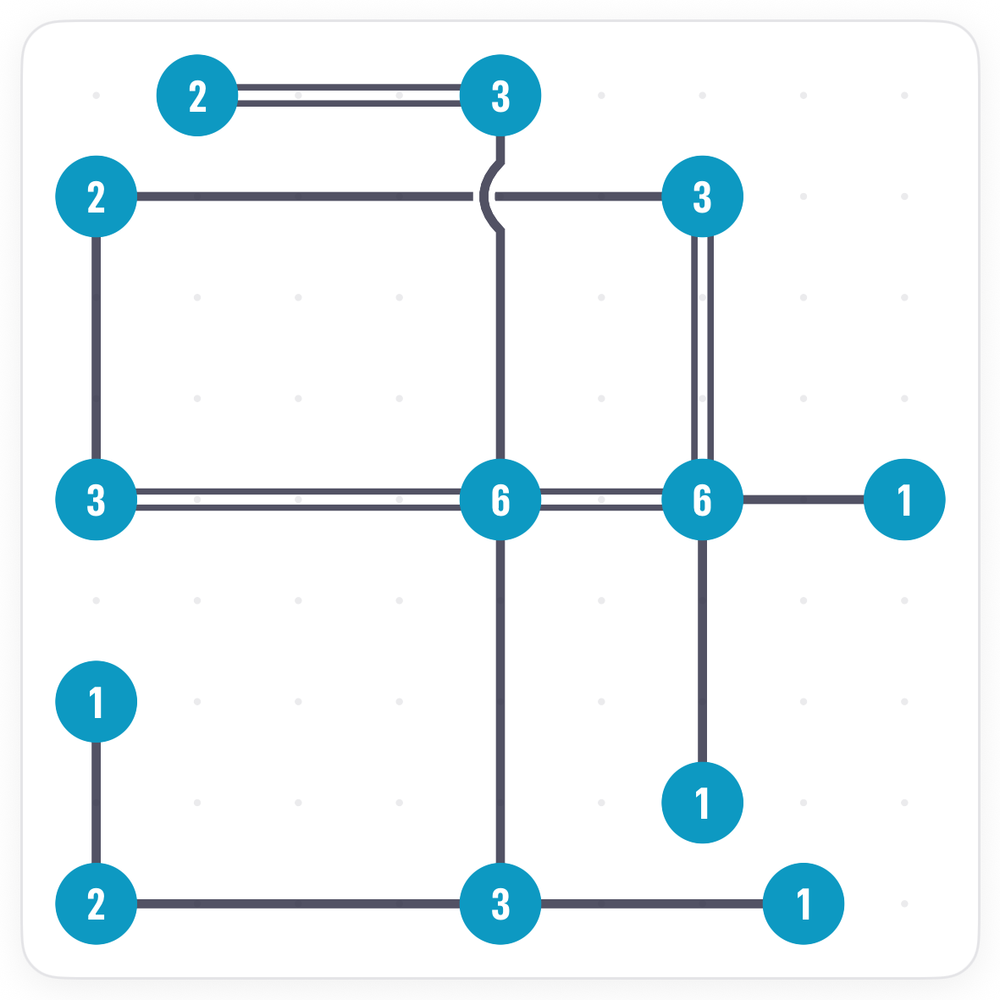

How to play Overpass Bridges.
Overpass is Bridges with one rule bent: somewhere on the board, exactly one bridge passes over another. Every other rule holds, so you play it like classic until the numbers force a crossing.
The board.
Thirteen islands on a 9 by 9 grid, numbers from 1 to 6. It looks like a classic board, and mostly plays like one.

The rules.
One crossing, no more and no fewer. When you draw it, the app lifts one bridge over the other so you can see which is which.
Start like classic.
The islands with only one way out go first, crossing or not. A 1 with a single neighbour has no choice.


The crossing.
The rules force a crossing when an island's number cannot be met without a bridge passing through another. Look for a bridge that has to be drawn and has a bridge in its way.


Common questions.
Can there be two crossings?
No. Exactly one. If your solution needs two, an earlier bridge is in the wrong place.
Which bridge goes on top?
It does not matter for the puzzle; the app draws one over the other so the crossing is visible.